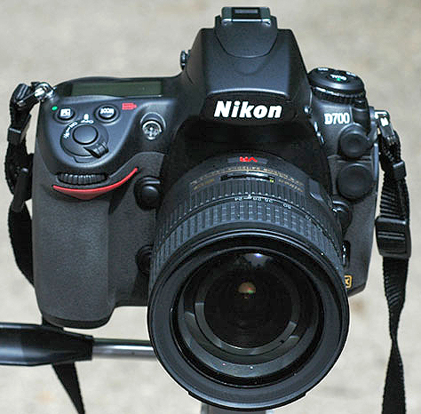
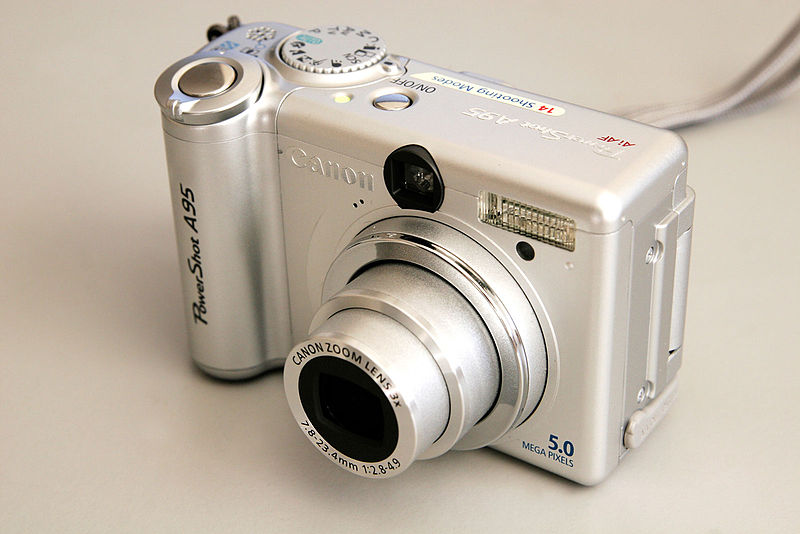

Digital Photography means

Digital photography is a form of photography that uses cameras containing arrays of electronic photodetectors to capture images focused by a lens, as opposed to an exposure on photographic film. The captured images are digitized and stored as a computer file ready for further digital processing, viewing, digital publishing or printing.
Until the advent of such technology, photographs were made by exposing light sensitive photographic film and paper, which was processed in liquid chemical solutions to develop and stabilize the image. Digital photographs are typically created solely by computer-based photoelectric and mechanical techniques, without wet bath chemical processing.
Digital photography is one of the several forms of digital imaging. Digital images are also created by non-photographic equipment such as computer tomography scanners and radio telescopes. Digital images can also be made by scanning other printed photographic images or negatives.

The first consumer digital cameras were marketed in the late 1990s. Professionals gravitated to digital slowly, and were won over when their professional work required using digital files to fulfill the demands of employers and/or clients, for faster turn-around than conventional methods would allow. Starting around 2007, digital cameras were incorporated in cell phones and in the following years, cell phone cameras became widespread, particularly due to their connectivity to social media websites and email. Since 2010, the digital point-and-shoot and DSLR formats have also seen competition from the mirrorless digital camera format, which typically provides better image quality than the point-and-shoot or cell phone formats but comes in a smaller size and shape than the typical DSLR. Many mirrorless cameras accept interchangeable lenses and have advanced features through an electronic viewfinder, which replaces the through-the-lens finder image of the SLR format.
History
While digital photography has only relatively recently become mainstream, the late 20th century saw many small developments leading to its creation. The first image of Mars was taken as the Mariner 4 flew by it on July 15, 1965, with a camera system designed by NASA/JPL. While not what we usually define as a digital camera, it used a comparable process. It used a video camera tube, followed by a digitizer, rather than a mosaic of solid state sensor elements. This produced a digital image that was stored on tape for later slow transmission back to Earth.
The real history of digital photography as we know it began in the 1950s. In 1951, the first digital signals were saved to magnetic tape via the first video tape recorder. Six years later, in 1957, the first digital image was produced through a computer by Russell Kirsch. It was an image of his son. In the late 1960s, Willard S. Boyle and George E. Smith, two physicists with Bell Labs, Inc., invented the charge-coupled device (CCD), a semiconductor circuit later used in the first digital video cameras for television broadcasting. Their invention was recognized by a Nobel Prize in Physics in 2009. The first published color digital photograph was produced in 1972 by Michael Francis Tompsett using CCD sensor technology and was featured on the cover of Electronics Magazine. It was a picture of his wife, Margaret Thompsett. The Cromemco Cyclops, a digital camera developed as a commercial product and interfaced to a microcomputer, was featured in the February 1975 issue of Popular Electronics magazine. It used metal-oxide semiconductor (MOS) technology for its image sensor.
The first self-contained (portable) digital camera was created later in 1975 by Steven Sasson of Eastman Kodak. Sasson's camera used CCD image sensor chips developed by Fairchild Semiconductor in 1973. The camera weighed 8 pounds (3.6 kg), recorded black and white images to a cassette tape, had a resolution of 0.01 megapixels (10,000 pixels), and took 23 seconds to capture its first image in December 1975. The prototype camera was a technical exercise, not intended for production.[13] While it was not until 1981 that the first consumer camera was produced by Sony, Inc., the groundwork for digital imaging and photography had been laid.
The first widely commercially available digital camera was the 1990 Dycam Model 1; it also sold as the Logitech Fotoman. It used a CCD image sensor, stored pictures digitally, and connected directly to a computer for downloading images. Originally offered to professional photographers for a hefty price, by the mid-to-late 1990s, due to technology advancements, digital cameras were commonly available to the general public.
The advent of digital photography also gave way to cultural changes in the field of photography. Unlike with traditional photography, dark rooms and hazardous chemicals were no longer required for post-production of an image - images could now be processed and enhanced from behind a computer screen in one's own home. This allowed for photographers to be more creative with their processing and editing techniques. As the field became more popular, types of digital photography and photographers diversified. Digital photography took photography itself from a small somewhat elite circle, to one that encompassed many people.
The camera phone also helped popularize digital photography, along with the internet and social media. The first cell phones with built-in digital cameras were produced in 2000 by Sharp and Samsung. Small, convenient, and easy to use, camera phones have made digital photography ubiquitous in the daily life of the general public.
Number of photos taken
According to research from KeyPoint Intelligence/InfoTrends, an estimated 400 billion digital photos were taken globally in 2011 and this will rise to 1.2 trillion photos in 2017. An estimated 85 percent of the photos taken in 2017 will be done with the smartphone rather than a traditional digital camera.
Sensors
Image sensors read the intensity of light, and digital memory devices store the digital image information as RGB color space or as raw data.
The two main types of sensors are charge-coupled devices (CCD), in which the photocharge is shifted to a central charge-to-voltage converter, and CMOS or active pixel sensors.
Multifunctionality and connectivity
Except for some linear array type of cameras at the highest-end and simple web cams at the lowest-end, a digital memory device (usually a memory card; floppy disks and CD-RWsare less common) is used for storing images, which may be transferred to a computer later.
Digital cameras can take pictures, and may also record sound and video. Some can be used as webcams, some can use the PictBridge standard to connect to a printer without using a computer, and some can display pictures directly on a television set. Similarly, many camcorders can take still photographs, and store them on videotape or on flash memorycardswith the same functionality as digital cameras.
Digital photography is one of the most exceptional instances of the shift from converting conventional analog information to digital information. This shift is so tremendous because it was a chemical and mechanical process and became an all digital process with a built in computer in all digital cameras.
Performance metrics
The quality of a digital image is a composite of various factors, many of which are similar to those of film cameras. Pixel count (typically listed in megapixels, millions of pixels) is only one of the major factors, though it is the most heavily marketed figure of merit. Digital camera manufacturers advertise this figure because consumers can use it to easily compare camera capabilities. It is not, however, the major factor in evaluating a digital camera for most applications. The processing system inside the camera that turns the raw data into a color-balanced and pleasing photograph is usually more critical, which is why some 4+ megapixel cameras perform better than higher-end cameras.

Image at left has a higher pixel count than the one to the right, but lower spatial resolution.
Resolution in pixels is not the only measure of image quality. A larger sensor with the same number of pixels generally produces a better image than a smaller one. One of the most important differences is an improvement in image noise. This is one of the advantages of digital SLR (single-lens reflex) cameras, which have larger sensors than simpler cameras (so-called point and shoot cameras) of the same resolution.• Lens quality: resolution, distortion, dispersion (see Lens (optics))
• Capture medium: CMOS, CCD, negative film, reversal film etc.
• Capture format: pixel count, digital file type (RAW, TIFF, JPEG), film format (135 film, 120 film, 5x4, 10x8).
• Processing: digital and / or chemical processing of 'negative' and 'print'.
Pixel counts
The number of pixels n for a given maximum resolution (w horizontal pixels by h vertical pixels) is the product n = w × h. This yields e. g. 1.92 megapixels (1,920,000 pixels) for an image of 1600 × 1200. The majority of compact as well as some DSLR cameras have a 4:3 aspect ratio, i.e. w/h = 4/3. According to Digital Photography Review, the 4:3 ratio is because "computer monitors are 4:3 ratio, old CCDs always had a 4:3 ratio, and thus digital cameras inherited this aspect ratio."
The pixel count quoted by manufacturers can be misleading as it may not be the number of full-color pixels. For cameras using single-chip image sensors the number claimed is the total number of single-color-sensitive photosensors, whether they have different locations in the plane, as with the Bayer sensor, or in stacks of three co-located photosensors as in the Foveon X3 sensor. However, the images have different numbers of RGB pixels: Bayer-sensor cameras produce as many RGB pixels as photosensors via demosaicing(interpolation), while Foveon sensors produce uninterpolated image files with one-third as many RGB pixels as photosensors. Comparisons of megapixel ratings of these two types of sensors are sometimes a subject of dispute.
The relative increase in detail resulting from an increase in resolution is better compared by looking at the number of pixels across (or down) the picture, rather than the total number of pixels in the picture area. For example, a sensor of 2560 × 1600 sensor elements is described as "4 megapixels" (2560 × 1600 = 4,096,000). Increasing to 3200 × 2048 increases the pixels in the picture to 6,553,600 (6.5 megapixels), a factor of 1.6, but the pixels per cm in the picture (at the same image size) increases by only 1.25 times. A measure of the comparative increase in linear resolution is the square root of the increase in area resolution, i.e., megapixels in the entire image.
Dynamic range
Practical imaging systems both digital and film, have a limited "dynamic range": the range of luminosity that can be reproduced accurately. Highlights of the subject that are too bright are rendered as white, with no detail; shadows that are too dark are rendered as black. The loss of detail is not abrupt with film, or in dark shadows with digital sensors: some detail is retained as brightness moves out of the dynamic range. "Highlight burn-out" of digital sensors, however, can be abrupt, and highlight detail may be lost. And as the sensor elements for different colors saturate in turn, there can be gross hue or saturation shift in burnt-out highlights.
Some digital cameras can show these blown highlights in the image review, allowing the photographer to re-shoot the picture with a modified exposure. Others compensate for the total contrast of a scene by selectively exposing darker pixels longer. A third technique is used by Fujifilm in its FinePix S3 Pro digital SLR. The image sensor contains additional photodiodes of lower sensitivity than the main ones; these retain detail in parts of the image too bright for the main sensor.
High dynamic range imaging (HDR) addresses this problem by increasing the dynamic range of images by either
• increasing the dynamic range of the image sensor or
• by using exposure bracketing and post-processing the separate images to create a single image with a higher dynamic range.>br> HDR images curtail burn-outs and black-outs
Further information: Exposure
Storage
Many camera phones and most digital cameras use memory cards having flash memory to store image data. The majority of cards for separate cameras are SD (Secure Digital) format; many are CompactFlash (CF) and the other formats are rare. XQD card format was the last new form of card, targeted at high-definition camcorders and high-resolution digital photo cameras. Most modern digital cameras also use internal memory for a limited capacity for pictures that can be transferred to or from the card or through the camera's connections; even without a memory card inserted into the camera.
Memory cards can hold vast numbers of photos, requiring attention only when the memory card is full. For most users, this means hundreds of quality photos stored on the same memory card. Images may be transferred to other media for archival or personal use. Cards with high speed and capacity are suited to video and burst mode (capture several photographs in a quick succession).
Because photographers rely on the integrity of image files, it is important to take proper care of memory cards. Common advocacy calls for formatting of the cards after transferring the images onto a computer. However, since all cameras only do quick formatting of cards, it is advisable to carry out a more thorough formatting using appropriate software on a PC once in a while. Effectively, this involves scanning of the cards to search for possible errors.
2K
2K is a 17:9 format, defined by the Digital Cinema Initiatives, is a resolution of 2048 x 1080. It is most commonly found on professional cinema cameras and gear.
4K DCI
This is 4K as is defined by the Digital Cinema Initiatives. It is a 17:9 format that is a resolution of 4096 x 2160. It is most commonly found on professional cinema cameras and gear. 4K UHD
Ultra High Definition 4K is a 16:9 format that is a resolution of 3840 x 2160. It is the most common type of 4K for consumer applications and distribution. 720p
Shorthand term used to describe an HD signal format that has a 16:9 aspect ratio, 1280 x 720 resolution, and progressive frame rates. The major HDTV broadcasting standard is 60 (59.94) frames per second (or 50 frames per second, depending on the region). Non-broadcast standard frame rates are also common in cameras, including lower frame rates of 30 fps and higher frame rates of 120 fps, 240 fps, etc. 1080p
Also known as “Full-HD,” 1080p is a shorthand term for video recorded at 1920 lines of horizontal resolution and 1080 lines of vertical resolution, and optimized for 16:9 format playback. The “p” stands for progressive, which means all of the data is contained in each frame, as opposed to “interlaced” (i), in which the image data is split between two frames in alternating lines of image data. 1080i
Similar to 1080p video, the “i” stands for “interlaced,” which differs from 1080p (progressive) video in that each frame contains two fields of data (but typically has double the frame rate). While progressive video is too large for broadcast, 1080i exists primarily for broadcast use, as the lower frame rate allows the signal to be sent over 60 Hz systems. The signal is 60i for NTSC or 50i for PAL. Aberration
A distortion of image quality or color rendition in a photographic image caused by optical limitations of the lens used for image capture. Aberrations commonly show up in the form of halation around high-contrast portions of the image, or “smearing” of color toward the edges of the frame. Aspheric lens surfaces and advanced lens coatings are often used in more expensive or complex lenses as a means of reducing aberrations. Absolute resolution
Image resolution as expressed in horizontal and vertical pixel count (e.g., 1600 x 1200 pixels is the absolute resolution, and is also expressed as 2.1 megapixels (MP), having more than 2,000,000 pixels on its sensor). A-D Converter
The A-D Converter converts the analog signal that is emitted from the image sensor into a digital signal. Acquire
To import digital image files into a software application for processing or editing purposes. The term is often applied differently within different types of software. Adobe RGB (Adobe RGB 1998)
A widely accepted color space that encompasses a wider range of color than the more commonly used sRGB color space. Adobe RGB is the preferred color space for images intended for prepress applications. AF Servo
Also known as Continuous Focus, AF Servo is maintained by partially pressing the camera's shutter release button, which enables you to maintain focus continuously on a moving subject as the subject moves within the frame. Shutter-response times are usually faster in AF Servo, since the subject is already in focus.
The process by which smooth curves and lines that run diagonally across the screen of a low-resolution digital file take on a jagged look as opposed to a smooth, natural rendition. Aliasing is an artifact that results from a sample resolution that is not more than twice the frequency of what is being captured, or the Nyquist Rate. A common form of aliasing is moiré. Smoothing and anti-aliasing techniques can reduce the effects of aliasing.
ASA
An abbreviation of the American Standards Association, ASA is the term used to describe the light-sensitivity levels of film and camera imaging sensors. Also see ISO.
Aspect Ratio
Aspect ratio refers to the shape, or format, of the image produced by a camera. The ratio is derived by dividing the width and height of the image by their common factor. The aspect ratio of a 35mm image (36 x 24mm) is found by dividing both numbers by their common factor: 12. So, if you divide each by 12, your resulting ratio will be 3:2. Most computer monitors and digital cameras have a 4:3 aspect ratio. Many digital cameras offer the option of switching between 4:3, 3:2, or 16:9.
Aspherical surface
An Aspherical lens surface possesses more than one radius of curvature, which allows for the correction of lens aberrations that are common in simpler lens designs. Sharper definition toward the edges of an image is the most common benefit of a lens containing aspheric elements
ATSC
ATSC is the abbreviation for Advanced Television Systems Committee, which developed a set of standards for digital television transmission over terrestrial, cable, and satellite networks.
Audio
Almost all digital cameras can record audio to go along with their video-capture abilities. Depending on the make and model of the camera, sound can be recorded in monaural or in stereo using the camera’s built-in microphone(s), or via higher-fidelity microphones that plug into the camera’s audio jack. Even for still images, most cameras can record short audio annotations that are embedded into the image file.
Autofocus
The ability of the camera and lens to keep the subject in focus during an exposure. Autofocus can be Continuous, meaning focus is maintained regardless of where it moves within the frame, or Single, meaning the point of focus is locked regardless of where the subject may move.
Barrel Distortion
An optical distortion resulting in the image bowing out of square. Barrel distortion is usually associated with less expensive wide-angle lenses and digital cameras, and is most apparent in architectural photographs or images containing lines that run parallel to each other in the horizontal or vertical plane.
The ability to scan and process more than one image in a single action. Batch scanning is only recommended if all of the images being scanned or corrected are equal in tonal values.
Bit
A bit (binary digit) is the smallest unit of digital information. Eight bits equals one byte. Digital images are often described by the number of bits used to represent each pixel, i.e., a 1-bit image is monochrome; an 8-bit image supports 256 colors or grayscales; while 24 or 32-bit images support an even greater range of color.
Bitmap
A method of storing digital information by mapping out an image bit by bit. The density of the pixels determines how sharp the image resolution will be. Most image files are bitmapped. Bitmap images are compatible with all types of computers.
Blocked Shadows
Term for lack of, or loss of, shadow detail in a photographic image, usually the result of underexposure or images captured by a lower resolution (and less dynamic) imaging sensor. Although lost shadow detail can often be (partially) reclaimed in photo-editing applications, HDR (High Dynamic Range) imaging—in which two or more bracketed images are sampled and combined into a single image file containing increased levels of shadow, highlight, and mid-tone detail—has become an increasingly common in-camera solution for retaining both shadow and highlight detail.
Blooming
The appearance of a bright or colored halo around brighter areas of digital image files. Blooming is caused when a portion of the imaging sensor in a digital camera is exposed to too much light, causing signal “leaks” to the neighboring pixels.
Blowout
Blowout is caused by overexposure, which results in a complete loss of highlight detail. With the exception of raw files captured within two stops of the correct exposure, blown-out highlights are difficult, if not impossible, to correct after the fact.
BMP
A bit-mapped file format used by Microsoft Windows. The BMP format supports RGB, indexed-color, grayscale, and Bitmap color modes.
Bokeh
An English transliteration of a Japanese word that means “haze” or “blur.” Pronounced boh-keh, it refers to the out-of-focus areas in a photograph with limited depth of field, particularly around, but not limited to, the highlight areas. Bokeh appears as little circles in the unsharp areas. Depending upon the shape of the opening formed by the blades of the lens’s aperture, the circles appear either more or less circular.
Buffer Memory
A buffer memory is a temporary “holding area” for image data waiting to be processed in a camera. Buffers enable a camera to continue capturing new image files without having to shut down while previous image files are processed. Printers also make use of buffers, which allow you to queue up several pictures at a time while the printer outputs previously queued-up image files.
Burst Rate
The number of consecutive images a digital camera can capture continuously before filling the memory buffer or memory card. To capture a burst of images, the camera must first be locked into “Burst” mode or “Continuous” mode.
Card Reader/Writer
A device that allows you to transfer data directly from a camera's removable memory card to the computer, without being compelled to connect the camera to the computer.
CCD (Charge-Coupled Device)
A semiconductor device that converts optical images into electronic signals. CCDs contain rows and columns of ultra small, light-sensitive mechanisms (pixels) that generate electronic pulses when electronically charged and exposed to light. These pulses work in conjunction with millions of surrounding pixels to collectively produce a photographic image. CCDs and CMOS (Complementary Metal Oxide Semiconductor) sensors are the dominant technologies for digital imaging.
CCD, Linear
Aka scanner-type CCD, linear CCDs are long, thin sensors that capture an image by recording a vast number of individual "exposures" while scanning across the picture frame. These are best suited for still subjects and continuous illumination. Linear CCDs are predominantly (if not exclusively) used for technical applications.
Chromatic Aberration
Also known as color fringing, chromatic aberration occurs when the collective color wavelengths of an image fail to focus on a common plane. The results of chromatic aberration are most noticeable around the edges of high-contrast images, especially toward the edges of the frame. Chromatic aberration is most common on less expensive lenses, although even the best optics can occasionally display lower levels of chromatic aberration, under certain conditions.
Another form of chromatic aberration is called “purple fringing,” which comprises the purple streaks or halos that often appear within images produced by digital cameras. Purple fringing originates in the light refracted from the light-gathering micro lenses that cap the sensor's pixels. In backlit scenes, this form of purple fringing is commonly called “blooming.”
CMY Color (Cyan, Magenta and Yellow)
These three secondary colors can be combined to recreate all other colors. Like CMYK, CMY is used in printing to create the colors seen in a print, although with less density in the blacks than CMYK color. CMY color is used in some of the least expensive desktop printers.
Color Palette
A palette is the set of available colors. For a given application, the palette may be only a subset of all the colors that can be physically displayed. For example, many computer systems can display 16 million unique colors, but a given program would use only 256 of them at a time if the display were in 256-color mode. The computer system's palette, therefore, would consist of the 16 million colors, but the program's palette would only contain the 256-color subset.
Color Space
The range of colors that can be reproduced on a computer monitor or in print. The most commonly used color spaces for digital imaging are the baseline sRGB and wider-gamut Adobe RGB (1998).
CompactFlash Card (CF)
A popular flash memory device, which is available in a number of storage capacities. Unlike earlier mechanically driven MicroDrives, newer CF cards are solid state, quite stable, and are capable of operating under extreme environmental conditions. Once the dominant format for in-camera data storage, CF cards have receded from the spotlight as smaller SD/SDHC/SDXC memory cards have become the card of choice in ever-smaller digital cameras.
Depth of Field (DOF)
Literally, the measure of how much of the background and foreground area before and beyond your subject is in focus. Depth of field can be increased by stopping the lens down to smaller apertures. Conversely, opening the lens to a wider aperture can narrow the depth of field.
Depth of Focus
Depth of focus is the measurement of the area in focus within an image, from the closest point of focus to the furthest point of focus.
Digital Asset Management (DAM)
This is the process of managing tasks and decision making regarding the import, export, annotation, cataloguing, storage, retrieval, and distribution of digital assets such as image files.
Digital Negative
Digital Negative (DNG) is a publically available raw image format owned by Adobe and used for digital photography. It's based on the TIFF/EP standard format and incorporates the use of metadata.
Digital Zoom
Unlike an optical zoom, which is an optically lossless function of the camera’s zoom lens, digital zoom takes the central portion of a digital image and crops into it to achieve the effect of a zoom. This means that the existing data is not enhanced or added to, merely displayed at a lower resolution, thereby giving an illusion of an enlarged image.
DSLR (Digital Single Lens Reflex)
A single lens reflex (SLR) camera that captures digital images.
DVB
DVB is the abbreviation for Digital Video Broadcasting, a suite of internationally accepted open standards for digital television, maintained by the DVB Project, an international industry consortium with more than 270 members.
Dye Sublimation
A printing method where waxy ink is heated to temperatures high enough for the ink to vaporize and bond with a special receiver paper, resulting in images with continuous tone color. The word sublimation is used because the dye goes straight from being a solid to a gas and completely skips the liquid stage. Dye-sublimation prints are also known as dye-subs.
Dynamic Range
The range of brightness and tonality reproduced in a digital (or traditional) photographic image. Wider dynamic range translates into greater tonal values (and detail) between the darkest shadows and the brightest highlights.
Effective Pixels
Effective Pixels is a measurement of the number of pixels that actively record the photographic image within a sensor. As an example, a camera might hold a sensor containing 10.5 megapixels, but they have an effective pixel count of 10.2 megapixels. This discrepancy is due to the fact that digital imaging sensors have to dedicate a certain percentage of available pixels to establish a black reference point. These pixels are usually arranged frame-like, along the edge of the sensor, out of range of the recorded image.
Electronic Viewfinder (EVF)
An electronic viewfinder digitally replicates the field of view of the area captured by the camera lens. While once considered a poor replacement for optical viewfinders, newer EVFs containing a million-plus pixels and faster refresh times have become quite accurate, in many cases approaching the clarity levels of optical finders. An advantage of EVFs is their ability to display exposure data and grids on demand.
EXIF (Exchangeable Image File)
Commonly used header format for storing metadata (e.g. camera/lens/exposure information, time/date/, etc.) within digital image files.
Export
The process of sending a file out through a specialized mini-application or plug-in, so as to print or compress it. This term is also used to describe the action of saving the data to a specialized file format, i.e. JPEG or GIF.
Exposure
Exposure is the phenomenon of light striking the surface of film or a digital imaging sensor. The exposure is determined by the volume of light passing through the lens aperture (f/stop) combined with the duration of the exposure (shutter speed).
The proper exposure, which is best determined using a light meter, can be established in a number of exposure modes including manual, program (automatic), shutter priority, and aperture priority.
Adding to or subtracting from the “correct” exposure time indicated by the camera's light meter, which results in a final exposure that is either lighter or darker than the recommended exposure time. Most cameras allow for exposure compensation in 1/2, 1/3, or full-stop increments. Note that the “correct” exposure is not necessarily the “best” exposure.
F-Stop (Aperture)
A term used to describe the aperture, or diaphragm opening of a lens. F-stops are defined numerically: f/1.4, f/5.6, f/22, etc. Larger, or wider apertures, allow more light to enter the lens, which calls for faster shutter speeds. “Faster” (wider) apertures also allow for selective focus (narrow depth of field), while slower (smaller) apertures allow for greater depth of field. Wider apertures are preferable for portraits, while smaller apertures are preferable for landscapes.
Field Monitor
Ranging in size from a few inches to about a foot diagonally, field monitors serve as a highly accurate alternative to the smaller viewing screens found on most video cameras and camcorders, assisting with critical focus and exposure calibration. With the advent of video capture using HDSLRs, field monitors have become part and parcel of many HDSLR users’ equipment inventories.
File Format
The way an image is saved to a digital camera's memory. JPEG, TIFF, and raw (DNG or other proprietary file formats) are the most common file formats found in digital cameras.
Firmware
Software programs or data that have been written to read-only memory (ROM). Firmware is a combination of software and hardware. In digital cameras, the firmware is the program that allows the user to activate and control the features of the camera.v
Flash Sync
Flash sync is used to describe either the connection point where you plug an external electronic flash into your camera (usually a PC port or the camera's hot shoe), or the fastest shutter speed at which your camera can “sync” with an external flash. Most DSLRs have top sync speeds of 1/125th to 1/320th-second, although some camera/flash combinations can be synced at speeds of up to 1/15,000th-second.
Focal Length Magnifier
Also known as Magnification Factor or Crop Factor, this term is used to describe the angle of view (AOV) of a lens used on a DSLR in relation to how it would appear on a full-frame 35mm camera. As an example, compact DSLRs contain sensors that are about 50% smaller than a standard 35mm frame. As a result, the effective focal length and AOV of a 50mm lens on a compact DSLR would be reduced, or cropped to the equivalent of a 75mm lens. Canon EOS Rebels and other compact Canon DSLRs have a 1.6x magnification factor, which would make a 50mm lens effectively an 80mm lens.
Fringing
Fringing, commonly associated with less expensive lenses, describes the “bleeding” of color along the edges of high-contrast portions of a digital image. Fringing often shows up as cyan blurring on one side of a high-contrast object, complemented by red or magenta blurring on the opposite side of the object.
Gamma
The brightness curve of the color spectrum as displayed (or reproduced) on a computer monitor, a printer or scanner.
Gain
Gain refers to the relationship between the input signal and the output signal of any electronic system. Higher levels of gain amplify the signal, resulting in greater levels of brightness and contrast. Lower levels of gain will darken the image, and soften the contrast. Effectively, gain adjustment affects the sensitivity to light of the CCD or CMOS sensor. In a digital camera, this concept is analogous to the ISO or ASA ratings of silver-halide films.
GIF
Graphic Interface designed by CompuServe for using images online. This is a 256-color or 8-bit image.
GPS (Global Positioning System)
A technology for establishing the location of earth-based objects, using coordinates obtained by orbiting satellites. These coordinates can be embedded into the headers of digital images as accurate reference points for where a photograph was taken.
Hardware Calibration
A method of calibrating a digital camera, scanner, printer or monitor using specialized hardware such as colorimeters, densitometers, and spectrometers.
HDSLR
A digital single lens reflex camera (DSLR) that can also capture high-definition video. Most current DSLRs are also HDSLRs, making the terms almost interchangeable.
Histogram
A visual representation of the exposure values of a digital image. Histograms are most commonly illustrated in graph form by displaying the light values of the image's shadows, midtones, and highlights as vertical peaks and valleys along a horizontal plane. When viewing a histogram, the shadows are represented on the left side of the graph, highlights on the right side, and midtones in the central portion of the graph.
Hot Shoe
A “live” accessory shoe, usually located on the top of the camera prism housing, which enables you to mount and trigger an electronic flash or wireless transmitter. Hot shoes can also be used to support external microphones, electronic viewfinders, GPS devices, and field monitors.
ICC Profile (International Color Consortium profile)
A universally recognized color-management standard for specifying the color attributes of digital imaging devices (scanners, digital cameras, monitors, and printers) to maintain accurate color consistency of an image from the point of capture through the output stage.
Inkjet
A printing method in which the printer sprays micro-jets of ionized ink at a sheet of paper in droplet sizes as small as 2 picoliters. Magnetized plates in the ink's path direct the ink onto the paper in the desired shapes and patterns to make an image.
Interlaced Scan
Interlaced video is a commonly used video capture technique in which the imagery consists of two fields of data captured a frame apart and played back in a manner that reproduces motion in a natural, flicker-free form. Interlaced video takes up less storage capacity than progressively captured video.
ISO (International Organization for Standardization)
Film speed rating expressed as a number indicating an image sensor’s (or film's) sensitivity to light. The higher the number, the more sensitive and faster the sensor (or film) is. Although traditional cameras don't have a specific ISO rating, digital cameras do as a way to calibrate their sensitivity to light. ISO is equivalent to the older ASA.
Most digital cameras have native (basic) ISO ratings of about 100, but can be “extended” far beyond this base rating in order to capture sharp imagery under lower lighting conditions. When shooting at extended ISO levels, image quality begins to suffer in terms of sharpness levels, noise, contrast, and added “graininess.”
Jaggies
Term for the stair-stepped appearance of curved or angled lines in a digital image file. The smaller the pixels and/or the greater their number, the less apparent are the “jaggies.” Jaggies are most common in photographs captured at lower resolving powers and Hello Kitty-type digital cameras.
JPEG (Joint Photographic Experts Group)
The de facto standard for image compression in digital imaging devices. JPEG is a “lossy” compression format, capable of reducing a digital image file to about 5% of its normal size. The resulting decompression of the file can cause "blockiness," "jaggies," or "pixelization" in certain digital images. The greater the compression levels, the more of a chance pixelization or "blockiness" will occur. The greater the pixel count, the less of a chance pixelization will occur.
Kilobyte
1,024 bytes, written kB, is used to refer to the size of an image file. This relates to the amount of information, or image data, the file contains.
LAB Color
A perceptually linear color space (RGB and CMYK are non-linear color spaces) that utilizes luminance as a means of increasing contrast and color saturation.
Lag Time
Also known as shutter lag, lag time refers to the delay that sometimes occurs between the time the shutter button is pressed and the time the shutter fires. Shutter lag is most prevalent when using less expensive point-and-shoot cameras.
LCD (Liquid Crystal Display)
LCD screens, usually found on the rear of digital cameras, allow you to preview and review photographs you are about to take or have taken. LCDs utilize two sheets of polarizing material with a liquid crystal solution between them. An electric current passed through the liquid causes the crystals to align so light cannot pass through them. Each crystal, therefore, is like a shutter, either allowing light to pass through or blocking the light and producing an image in color or monochrome.
Lithium-Ion
A type of rechargeable battery that was originally developed for use with camcorders and is now used as a power source for most digital still cameras and camcorders.
Matrix Metering
Also known as segmented metering, matrix metering takes the total image area and breaks it into sections, which are analyzed by the camera's light meter and compared to the light values of the surrounding sections. The results are then compared to similar lighting situations stored in the camera's memory and a correct exposure is established. This entire process occurs in a few microseconds.
Megabyte
1,024 Kilobytes, written MB, is used to refer to the size of files or media, such as hard drives. The number refers to the amount of information or image data in a file or how much information can be contained on a memory card, CD or DVD, hard drive or disk.
Megapixel
A megapixel contains 1,000,000 pixels and is the unit of measure used to describe the size of the sensor in a digital camera.
Memory
The camera's file-storage medium. Most cameras use flash memory, which is a safe, highly reliable form of storage that doesn't need power to hold the images after they are saved. Flash memory won't erase the images unless the user chooses to do so. Some cameras contain a limited quantity of built-in memory, but certainly not enough to capture more than a dozen or so images.
Memory Card
In digital photography, a memory card is a removable device used in digital cameras to store the image data captured by the camera. There are several different types of memory cards available including CompactFlash, SmartMedia, SD/SDHC/SDXC, XD, and others.
Micro Drive
Developed by IBM, micro drives are one of the original types of digital memory cards for digital cameras. Essentially small hard drives, micro drives have given way to solid-state Compact Flash cards, which contain no moving parts and, as such, are far more reliable.
Micro Lenses
Micro lenses are commonly mounted on the tops of the light-gathering portion of pixels (aka photons) and are often angled along the edges of camera sensors to capture and redirect light back into the pixel, as a method of reducing light falloff on the edges of the image and redirecting it for image processing. Not to be confused with NIKKOR micro lenses.
NiCad (Nickel Cadmium ) Battery
A type of rechargeable battery, the NiCad battery was one of the first successful rechargeable batteries used in small electronics, such as digital cameras.
NiMH ( Nickel-Metal Hydride) Battery
A commonly used rechargeable battery for digital cameras and camcorders. A NiMH battery can offer two to three times the capacity of an equivalent size NiCad battery.
Non-Volatile Memory
A type of memory card that retains data when power is turned off. Camera memory cards (CompactFlash, SD, SmartMedia, etc.) use non-volatile memory.
OLED (Organic Light Emitting Diode)
An advanced form of LED that does not require backlighting, the OLED displays denser blacks and higher contrast compared to standard LCDs, and can be manufactured with thinner profiles than standard LCDs. OLED displays have small red, green, and blue LEDs—as opposed to LCD screens, which have red, green, and blue color filters over a backlight that twist shut to block light.v
Optical Resolution
The physical resolution at which a device can capture an image. The term is used most frequently in reference to optical scanners and digital cameras.
Optical Zoom
Another name for a zoom lens, which is a lens that enables the user to change the magnification ratio, i.e., focal length of the lens, either by pushing, pulling or rotating the lens barrel. Unlike variable focal length lenses, zooms are constructed to allow a continuously variable focal length, without disturbing focus.
Overexposure
The result of recording too much light when taking a picture, which results in a lighter image. In digital imaging, overexposure can usually be corrected to a certain extent by the use of image-editing software, depending on the degree to which an image is overexposed. Raw files offer more latitude than JPEGs and TIFFs for correcting overexposure.
Parallax
The difference between the image, as seen by a camera’s viewing system, and the image recorded by the imaging sensor. In point-and-shoot cameras, this variance increases as subjects move closer to the lens. Only through-the-lens (TTL) viewing systems are adjusted to avoid parallax error.
PC Card (PCMCIA Card)
PC cards are about the size of a credit card and were developed to be a standard for hardware capability, expanding devices. PCMCIA cards provide an easy way to transfer photos from the camera to a notebook or desktop PC. In recent years, PCMCIA have become less common as newer (and smaller) technologies have taken their place.
Pixel
Short for picture element, pixels are the tiny components that capture the digital image data recorded by your camera. Pixels are also the individual components that collectively recreate the image captured with your digital camera on a computer monitor. The more pixels there are, the higher the screen or image resolution will be.
PNG (Portable Network Graphics)
Developed as a patent-free alternative to GIF, this format is used for lossless compression for purposes of displaying images on the World Wide Web. Adopted by the WWW consortium as a replacement for GIF, some older versions of Web browsers may not support PNG images.
Racking Focus
Racking focus is the technique of directing the attention of the viewer of video footage by shifting the focus of the lens from a subject in the foreground to a subject in the background, or vice versa.
Raw Files
Many pro and semi-pro digital cameras include the option for capturing raw files, which—unlike JPEGs, TIFFs, and other file formats—contain all of the data captured during the exposure in an unedited format. When processed, raw files can be adjusted far more extensively than images captured in other imaging formats, and can be saved as JPEGs, TIFFs, etc. The original raw file remains unaltered and can be reprocessed at any time for other purposes.
Reflex
A reflex camera is one that utilizes a mirror system to reflect the light (or latent image) coming through the lens to a visible screen. The image seen in the camera's viewfinder is identical to what strikes the camera's imaging sensor (or film plane). This system provides the most accurate way to frame and focus. The reflex system avoids the parallax problem that plagues most direct view cameras. Reflex cameras are also called SLRs or DSLRs.
Resolution
Refers to the number of pixels, both horizontally and vertically, used to either capture or display an image. The higher the resolution, the finer the image detail will be.
RGB Color (Red Green Blue)
RGB is an additive color model in which red, green and blue light are added together in various ways to reproduce a broad array of colors for representation and display as images on computers and other digital devices.
Saturation
Saturation is the depth of the colors within a photographic image. Photographs with deep levels of color are described as being heavily saturated. A photograph with lighter levels of saturation is described as having a muted color palette. A totally desaturated color photograph becomes monotone—or black and white.
SD Card (Secure Digital)
Far smaller than CompactFlash (CF) cards, Secure Digital memory cards have enabled camera manufacturers to further reduce the size of digital cameras. They are also commonly found in cell phones, PDAs and other small electronic devices that incorporate removable memory. Newer-generation (and faster) SD cards include SDHC and SDXC memory cards.
Shutter
A mechanism in the camera that controls the duration of light transmitted to the film or sensor. Leaf-shutter lenses, which include most view camera lenses and many medium-format lenses, contain their own proprietary shutters.
Shutter Priority
A metering mode in which the shutter speed is fixed and the exposure is controlled by opening or closing the lens aperture. Most modern cameras have step-less shutters that can be triggered to open and close infinitely between the camera's fastest and slowest shutter speeds.
Storage Card (Memory Card)
A compact memory storage device used to store data captured by a digital camera. Storage card formats include CompactFlash (CF), Secure Digital (SD), xD, SmartMedia, and Memory Sticks.
Thumbnails
Small, contact sheet-sized image files used to reference or edit digital images. The images that appear on a camera's LCD are thumbnail images of the larger file.
TIFF (Tagged-Image File Format)
TIFF files are flexible bitmap image files supported by virtually all paint, image editing, and page-layout applications. Also, virtually all desktop scanners can produce TIFF images. This format, which uses the .tif extension, supports CMYK, RGB, Lab, and grayscale files with alpha channels and Bitmap files without alpha channels. TIFF also supports LZW compression, a lossless compression format.
Time Lapse
A series of photographs captured over a period of time. These images can be captured in variable or set time intervals over the course of seconds, minutes, hours, days, weeks, etc.
Although several more advanced cameras offer the option of custom function time-lapse imaging, most cameras require optional hard-wired or remotely operated triggering devices to capture time-lapse imagery.
Tonal Range
A term used to describe the quality of color and tone ranging from an image's shadow details through the brightest highlight details, including all of the transitions in between these extreme points. Tonal range can also be described in terms of “gamut.”
Underexposure
The result of recording too little light when taking a picture, which results in a dark image. In digital imaging, underexposure can be corrected to a certain extent by the use of image-editing software, depending upon how underexposed your image is. Raw files offer more latitude than JPEGs and TIFFs for correcting underexposure.
Vibration Reduction
The ability of a digital still camera to capture segments of variable-resolution video.
Viewfinder
System used for composing and focusing on the subject being photographed. Aside from the more traditional rangefinder and reflex viewfinders, many compact digital cameras utilize LCD screens in place of a conventional viewfinder as a method of reducing the camera’s size (and number of parts). In recent years, electronic viewfinders (EVFs) have become increasingly better and are they slowly finding their way into traditional DSLRs.
Watermark
Traditionally, a watermark is an image or icon that is embedded into paper for security purposes (American paper currency has a watermark). In digital photography, a watermark refers to information that is embedded in the image data to protect the copyrights of the image.
xD Cards
A small, narrow-profile memory card format designed for use with the smallest digital cameras, PDAs, and cell phones that accept additional memory.
5 Ways to shoot detail photos
1. The single detail
Sometimes you can show a single aspect of the scene without giving away any other information about the rest of the scene, other than what is clearly apparent in your image. Just about every type of subject lends itself to this type of photograph: architecture, travel, environmental features, landscapes and even action.When shooting the single detail, make sure you focus on creating a simple yet powerful image. Since your subject matter will be limited, the strength of your image will depend on a good composition and the strong use of light, colour and form. (see photos above and below as example)

2. Details that give a sense of place
Including more elements in your shot often hints about how the subject relates with its surroundings. This can really add depth to your shot, because it starts to imply reference and narrative, instead of just being about a single thing. You’ll want to include enough information in the image that suggests a greater story about the scene to your viewers, without giving away too much information or weighing down your photograph. 
3. Larger details
Detail shots don’t always have to be photographs of smaller objects and they don’t always have to be taken up close. There is enough detail of different sizes in the world that you can focus on nearly anything, as long as you can accentuate that particular subject matter in a visually appealing way. This is where long lenses really shine. I love shooting long, suggestive shots, of distant subjects with my telephoto zoom lens. The narrow angle of view lets me focus on just two or three elements, and the shallow depth of field creates a soft background that doesn’t distract from the main subjects.


4. Lines and textures
Sometimes your shot will be more about simple graphic form and texture, instead of a physical object. When done right, you can still tell a powerful visual story with limited subject matter. Experiment with lines, shapes, colours, patterns and other abstract subject matter that appeals to you. Shadows can be powerful compositional elements because they suggest how your subject relates with other tangible objects around them. 

5. Human details
People often make for the most powerful subjects, because as humans, we all relate with and respond to each other on some level. There is an unending variety of details that you can capture when shooting humans and their actions. Try focusing on elements such as interaction, motion, emotion and their association with others and with the world in general.


How digital cameras work

Photo: A typical image sensor. The green rectangle in the center (about the size of a fingernail) is the light-sensitive part; the gold wires coming off it connect it into the camera circuit.
Digital cameras look very much like ordinary film cameras but they work in a completely different way. When you press the button to take a photograph with a digital camera, an aperture opens at the front of the camera and light streams in through the lens. So far, it's just the same as a film camera. From this point on, however, everything is different. There is no film in a digital camera. Instead, there is a piece of electronic equipment that captures the incoming light rays and turns them into electrical signals. This light detector is one of two types, either a charge-coupled device (CCD) or a CMOS image sensor.
If you've ever looked at a television screen close up, you will have noticed that the picture is made up of millions of tiny colored dots or squares called pixels. Laptop LCD computer screens also make up their images using pixels, although they are often much too small to see. In a television or computer screen, electronic equipment switches all these colored pixels on and off very quickly. Light from the screen travels out to your eyes and your brain is fooled into see a large, moving picture.
In a digital camera, exactly the opposite happens. Light from the thing you are photographing zooms into the camera lens. This incoming "picture" hits the image sensor chip, which breaks it up into millions of pixels. The sensor measures the color and brightness of each pixel and stores it as a number. Your digital photograph is effectively an enormously long string of numbers describing the exact details of each pixel it contains. You can read more about how an image sensor produces a digital picture in our article on webcams.
How digital cameras use digital technology
Once a picture is stored in numeric form, you can do all kinds of things with it. Plug your digital camera into your computer, and you can download the images you've taken and load them into programs like PhotoShop to edit them or jazz them up. Or you can upload them onto websites, email them to friends, and so on. This is possible because your photographs are stored in digital format and all kinds of other digital gadgets—everything from MP3-playing iPods to cellphones and computers to photo printers—use digital technology too. Digital is a kind of language that all electronic gadgets "speak" today. 
Photo: Digital cameras are much more convenient than film cameras. You can instantly see how the picture will look from the LCD screen on the back. If your picture doesn't turn out okay, you can simply delete it and try again. You can't do that with a film camera. Digital cameras mean photographers can be more creative and experimental.
If you open up a digital photograph in a paint (image editing) program, you can change it in all kinds of ways. A program like this works by adjusting the numbers that represent each pixel of the image. So, if you click on a control that makes the image 20 percent brighter, the program goes through all the numbers for each pixel in turn and increases them by 20 percent. If you mirror an image (flip it horizontally), the program reverses the sequence of the numbers it stores so they run in the opposite direction. What you see on the screen is the image changing as you edit or manipulate it. But what you don't see is the paint program changing all the numbers in the background.
Some of these image-editing techniques are built into more sophisticated digital cameras. You might have a camera that has an optical zoom and a digital zoom. An optical zoom means that the lens moves in and out to make the incoming image bigger or smaller when it hits the CCD. A digital zoom means that the microchip inside the camera blows up the incoming image without actually moving the lens. So, just like moving closer to a TV set, the image degrades in quality. In short, optical zooms make images bigger and just as clear, but digital zooms make images bigger and more blurred.
Why digital cameras compress images
Imagine for a moment that you're a CCD or CMOS image sensing chip. Look out of a window and try to figure out how you would store details of the view you can see. First, you'd have to divide the image into a grid of squares. So you'd need to draw an imaginary grid on top of the window. Next, you'd have to measure the color and brightness of each pixel in the grid. Finally, you'd have to write all these measurements down as numbers. If you measured the color and brightness for six million pixels and wrote both down both things as numbers, you'd end up with a string of millions of numbers—just to store one photograph! This is why high-quality digital images often make enormous files on your computer. Each one can be several megabytes (millions of characters) in size. To get around this, digital cameras, computers, and other digital gadgets use a technique called compression. Compression is a mathematical trick that involves squeezing digital photos so they can be stored with fewer numbers and less memory. One popular form of compression is called JPG (pronounced J-PEG, which stands for Joint Photographic Experts Group, after the scientists and mathematicians who thought up the idea). JPG is known as a "lossy" compression because, when photographs are squeezed this way, some information is lost and can never be restored. High-resolution JPGs use lots of memory space and look very clear; low resolution JPGs use much less space and look more blurred. You can find out more about compression in our article on MP3 players.
Most digital cameras have settings that let you take pictures at higher or lower resolutions. If you select high-resolution, the camera can store fewer images on its memory card—but they are much better quality. Opt for low-resolution and you will get more images, but the quality won't be as good. Low-resolution images are stored with greater compression.
Turning ordinary photos into digital photos
There is a way to turn photos from an ordinary film camera into digital photos—by scanning them. A scanner is a piece of computer equipment that looks like a small photocopier but works like a digital camera. When you put your photos in a scanner, a light scans across them, turning them into strings of pixels and thus into digital images you can see on your computer.
1. Our photographs tell us what is important to us
When you ask people what possessions they would rescue from their burning house, one of the most frequent answers is the photograph album or a computer with their digital images. When in panic mode it’s interesting that we would probably grab photos rather than valuable jewelry. This impulse to save our recorded memories is a powerful force which tells us much about the role of photography in our lives and our constant desire to distil our most precious moments into images.

We preserve the important events and people in our lives. The ceremonies of birth and birthdays, marriages and anniversaries, holidays and new houses are all recorded because they matter. Photographs are our personal story, a timeline of our lives filled with faces and places that we love. They are our story, which we can share with others. The hundreds of images come together to form a narrative of our lives.
2. Photographs are part of our legacy
Once I remember sitting in a train as it passed a playground where children were standing to attention for the annual school photograph. Across the front row sat the teachers and behind them, hundreds of children neatly preened and uniformed. For the briefest second the entire assembly was motionless. We were passing just as the photographer clicked the shutter. Suddenly, as if in slow motion, the huge group scattered as children escaped their enforced immobility. The neat rows dissolved and broke into individuals who were now kicking footballs or huddled in friendship groups. None of those children realised that the photograph was probably going to outlive them. A couple of generations later it might surface among old papers in an attic and someone would search for granddad among the fresh young faces. Photographs matter because they freeze moments of our lives which pass unremarkably and which seem to have little importance to us at the time. The significance, however, may be for others who search for the person we once were or the places we once knew. They can be small pieces of a jigsaw that complete the larger picture of our lives. 
3. Photographs allow us to share and to communicate.
Images are much more than a simple record. Photography speaks to the best and most generous part of our human nature – the desire to share what we find beautiful and interesting with others. You only have to look at Flickr and a multitude of photo sharing sites to see this impulse at work. Millions of people sharing their personal, passionate and sometimes quirky take on the world around them. Our images can involve a world of strangers in our life. How powerful is that? 
4. Photography makes us artists
Photography allows us to express ourselves through an art form. We notice a beautiful landscape or an old man’s lined face and we want to capture it. Each of us will have a different reason to do so but, essentially, we want to create something. However humdrum our nine-to-five lives may be, the creation of an image makes us an artist. It feels good. 5. Photography is a complex language
Our images can express joy and sorrow, wonder and sympathy. Every human emotion can find a place in photography. For many years I never valued my photographs of overcast landscape because I believed that there was no beauty in a land with muted colours and a leaden sky. I wanted the land to be alive with colour and vibrancy. However, lack of colour in a landscape makes you search for other things that often go unremarked in bright sunlight. It could be a symmetry of hills or a tree standing out from a forest of thousands. I have suffered from depression for most of my adult life and photography gave me a language to express feelings for which I can find no words. We have a miserably poor vocabulary for mental illness and photography has allowed me to develop a visual language for some of the most difficult emotions. 
6. Photography has the power to move us
Photographs can grab our attention and speak directly to our emotions. Nick Ut’s photograph of a crying Vietnamese girl whose clothes have been burnt away by napalm embodies the power of a single image. At a more subtle level, we can learn lessons about a whole range of emotions. Grief has the power to wash away the luminance and chrominance of our lives. There is no magic way to restore them at will. We have to be patient. But while waiting we can search for the shapes and patterns that are still there in the greyness. They will lead us back to colour eventually. At moments of great sorrow in my life I have used images to express that hope of returning colour. 
Photography, at its best, is a powerful language which speaks to our emotions. It allows us to tell our story and show others our framing of the world around us.
Importance Of Digital Photography
Today we stand in the era of digital photography. From capturing personal moments on our mobile phones & immediately viewing the results to owning high-end DSLR/ SLR cameras & transferring images within minutes without the hassle of developing negatives, digital photography has made it easy for everyone to capture & document life & events.
A large part of the credit goes to the evolution of the camera itself. The point & shoot, and Go-Pro cameras have made it possible to capture the most extreme events like scuba diving, skydiving, snowboarding & surfing.
But it is not restricted to personal use alone. It has countless industrial applications. Professional photographers have shifted to the digital medium due to the ease & swiftness of work. It has erased the endless runs to the photo studio to develop prints that were captured weeks ago, and the disappointments experienced when the prints aren't developed satisfactorily. Digital photography has made it possible to see the results on the move & fits perfectly with our fast paced lives.
Digital photography has eliminated the delay in the process & reduced the cost involved with film processing. Today it is being used in every possible field, starting from science & medicine to fashion design & communication.
This evolution has opened many career opportunities for young enthusiasts who can now easily merge multiple interests. Photographers now make a living specialising in the field of their choice. There are instance of a microbiologist becoming a science photographer, allowing people to have a career of their choice. With the pace at which technology is changing there is no end to the possibilities that will be in the offering in the times ahead & with the simplicity of using these technologies gives a person the liberty & the luxury to open a mobile phone & start shooting away in the blink of an eye.
Due to these developments, photography is no longer a hobby but is being taught as a standalone course in institutes & universities. All you need to do is find the right course for yourself that will suit your career aims & prepare you for multiple opportunities.
Significance Of Digital Photography
For time immemorial, photography has been used to record history and information and over the years, photography gadgets have been developed and improved to suit modern needs and requirements. With the way the world has evolved today, digital photography is an art that has come to stay and cannot be pushed aside. It has proven to be a profitable venture and the advent of smartphones with digital cameras has further popularized digital photography. A digital camera is essentially a device that is useful in digital photography for capturing videos, images and sounds electronically.
Most digital devices can easily capture moving images, sounds, and videos while delivering results in high and excellent quality. With the aid of digital photography, people can easily capture memorable moments with family and friends. With advanced digital cameras, these images can be shared online on your favorite social networking sites. Even very extreme events like skydiving, snowboarding, scuba diving and snow surfing are now possible to be captured and recorded through digital photography so the list of benefits is endless.
To get the best out of digital photography, then the cameras with high resolution digital cameras and there are different advantages that come with using these great cameras which include;
• The very best and user-friendly features are usually gotten from these high resolution cameras.
• You can immediately review captured images and get feedback’s on image quality.
• You get the opportunity to make changes and modifications immediately.
• In digital photography, the problem of storage memory getting full is eliminated. Should the memory get full, you can delete unwanted and unused photos or simply get another memory stick.
• In digital photography, photos and images can be directly transferred to a computer without altering image or video quality.
• There are editing software which digital photography has brought about which you can use to make changes to how your photos and videos look.
While considering all of the above benefits, there is really no need to look towards any other side than digital photography as everyone has successfully put their minds on it.
The applications of digital photography are however not restricted to personal use only. There are lots of industrial applications and with digital photography, it is much easier and faster to get accurate results. The various applications of digital photography include medicine, communication, science, fashion designing and so on.
The digital photography industry has also evolved with time thereby creating career opportunities for young enthusiasts who have a flair for photography. There are photographers who now specialize in different fields such as a science photographer. This allows different people to have room to make a career out of photography in the way what they actually love doing normally.
With these developments, photography is also being taught as major courses in universities and institutes of learning. All you need to be done as an enthusiast is find the right course that aligns with your career goals and prepare for several opportunities in the future.
Advantages already in consumer level cameras
The primary advantage of consumer-level digital cameras is the low recurring cost, as users need not purchase photographic film. Processing costs may be reduced or even eliminated. Digicams tend also to be easier to carry and to use, than comparable film cameras. They more easily adapt to modern use of pictures. Some, particularly those that are smartphones, can send their pictures directly to e-mail or web pages or other electronic distribution.
Advantages of professional digital cameras
• Immediate image review and deletion is possible; lighting and composition can be assessed immediately, which ultimately conserves storage space. • High volume of images to medium ratio; allowing for extensive photography sessions without changing film rolls. To most users a single memory card is sufficient for the lifetime of the camera whereas film rolls are a re-incurring cost of film cameras.
• Faster workflow: Management (colour and file), manipulation and printing tools are more versatile than conventional film processes. However, batch processing of RAW files can be time consuming, even on a fast computer.
• Precision and reproducibility of processing: since processing in the digital domain is purely numerical, image processing using deterministic (non-random) algorithms is perfectly reproducible and eliminates variations common with photochemical processing that make many image processing techniques difficult if not impractical.
• Digital manipulation: A digital image can be modified and manipulated much easier and faster than with traditional negative and print methods. The digital image to the right was captured in Raw image format, processed and output in 3 different ways from the source RAW file, then merged and further processed for color saturation and other special effects to produce a more dramatic result than was originally captured with the RAW image.
Manufacturers such as Nikon and Canon have promoted the adoption of digital single-lens reflex cameras (DSLRs) by photojournalists. Images captured at 2+ megapixels are deemed of sufficient quality for small images in newspaper or magazine reproduction. Eight- to 24-megapixel images, found in modern digital SLRs, when combined with high-end lenses, can approximate the detail of film prints from 35 mm film based SLRs.
Lesser cost
One of the advantages that digital cameras provide is the fact that it is largely practical and convenient. There is lesser cost in the long run as one need not buy films anymore and will need not develop the pictures the old fashion way. They would only need to charge the batteries, get a reasonably large memory stick and they are good to go.
Better storage
Photographers can now store the pictures that they have taken in their computers and in their cds, allowing them to use the memory stick over and over again. There is no more need to store rolls of film and worry that they might disintegrate.
Printing convenience
Another convenience that digital cameras provide is the fact that it can be printed at home the same way one would print any kind of file.
Trial and Error
Another convenience that digital cameras provide is the fact that one can actually view the photos right after taking it and have the option of erasing it when it is not good. This, according to experts, spoils photographers. Because they can do a take over and over again, they don’t learn the discipline of planning for their shot before actually pressing the button. Still, for the amateur photographer, this is like manna in heaven as this enables them to easily take good photographs and see their mistakes.
Disadvantages of digital cameras
• High ISO image noise may manifest as multicolored speckles in digital images, rather than the less-objectionable "grain" of high-ISO film. While this speckling can be removed by noise-reduction software, either in-camera or on a computer, this can have a detrimental effect on image quality as fine detail may be lost in the process. • As with any sampled signal, the combination of regular (periodic) pixel structure of common electronic image sensors and regular (periodic) structure of (typically man-made) objects being photographed can cause objectionable aliasing artefacts, such as false colors when using cameras using a Bayer pattern sensor. Aliasing is also present in film, but typically manifests itself in less obvious ways (such as increased granularity) due to the stochastic grain structure (stochastic sampling) of film.
For many consumers, the advantages of digital cameras outweigh the disadvantages. Some professional photographers still prefer film. Concerns that have been raised by professional photographers include: editing and post-processing of RAW files can take longer than 35mm film, downloading a large number of images to a computer can be time-consuming, shooting in remote sites requires the photographer to carry a number of batteries, equipment failure—while all cameras may fail, some film camera problems (e.g., meter or rangefinder problems, failure of only some shutter speeds) can be worked around. As time passes, it is expected that more professional photographers will switch to digital.
Need for Computer literacy
Similar to film photography where you need to be also familiar with working in the dark room, one needs to have a modicum of computer skills. Not only will you be storing your photographs in the computer, operating the camera is like operating a small computer. You really have to be computer literate in order to maximize the functions of your camera.
Artistry is lost
There are some that argue that artistry and spontaneity is lost when using a digital camera because photographers do not shoot using various effects. For instance, some would not bother to blur the background anymore because they can fix the photo in Photoshop and other graphic programs. One can do a number of things with the computer, erase flaws, fix red eyes and sharpen some features.
Start Quiz